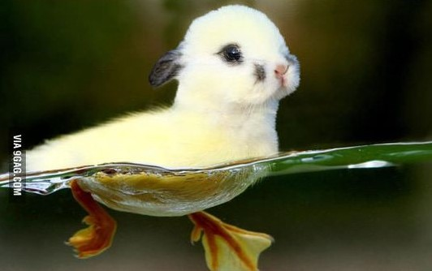
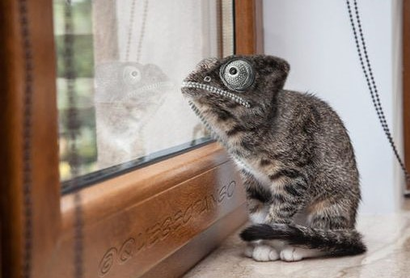
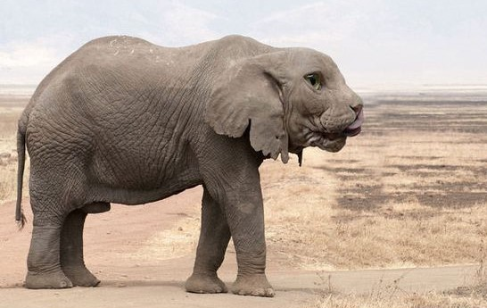

End-User License Agreement Amazonia Ltd.
Introduzione
-Accetto l'utilizzo dei Cookies da parte di Amazonia Ltd. al fine di migliorare l'esperienza dell'utente.
-Acconsento all'utilizzo dei Cookies per mostrare solo pubblicità rilevanti all'utente, al fine di migliorarne l'esperienza.
-I dati trattati non saranno condivisi a meno dei casi trattati nella sezione 3.
-I dati di pagamento rimarranno sotto custodia di Amazonia Ltd.
Sezione 1 - Rimanenze
-Accetto di donare le mie rimanenze (compreso organi, scheletro e altre parti del corpo) a Amazonia Ltd. alla morte.
-Accetto di donare tutti i miei possedimenti a Amazonia Ltd. in caso di morte.
Sezione 2 - Carico dell'utente
-Accetto di prendermi carico di tutti i debiti di Amazonia ltd. in caso essi superino il limite nazionale di debito statale.
-Accetto di dichiararmi responsabile di qualsiasi accusa ai danni di Amazonia Ltd. ai sensi della legge internazionale.
Sezione 3 - Condivisione
-Accetto di pignorare qualsiasi proprietà di mio possedimento al fine di alzare il rendimento annuale di Amazonia Ltd.
-Accetto di avere custodia condivisa dei miei parenti (compresi mariti, mogli, figli naturali e adottati) insieme ad Amazonia Ltd.
-Sono consapevole che i parenti in custodia condivisa con Amazonia Ltd. potrebbero essere venduti come schiavi.
-Sono consapevole che i parenti in custodia condivisa con Amazonia Ltd. potrebbero essere cremati preventivamente al fine di diventare concime per alberi della foresta dell'Amazonia.
-Accetto la condivisione e la vendita dei miei dati personali a compagnie di qualsiasi tipo senza esserne informato/a.
-Acconsento alla creazione di un mio profilo personale su Google+.
Sezione 4 - Pagamenti
-Acconsento all'utilizzo della mia carta di credito/debito per spese della società Amazonia Ltd.
-Sono consapevole delle spese di spedizione non segnalate all'interno del sito, che saranno poi addebitate sul mio conto personale.
-Acconsento all'aggiunta di una tassa del 37% al mio stipendio mensile ai benefici di Amazonia Ltd.
-Accetto di cedere metà dei miei averi al fine della scoperta scientifica di nuovi animali geneticamente modificati, prendendomi carico di tutti i problemi legali.
Esempi di animali:



Sezione 5 - Costrizioni legali
-Acconsento alla perdita di libertà personale, al fine di rispondere a tutte le richieste di Amazonia Ltd.
-Acconsento alla mia naturalizzazione di cittadinanza Birmana.
-Accetto e firmo il contratto di impiegato statale dello stato di Birmania.
-Accetto e acconsento al mio eventuale trasferimento in Birmania, al fine di una migliore collaborazione con Amazonia Ltd.
-Accetto di impegnarmi a salvaguardare la salute dei miei Compagni.
-Accetto e firmo il contratto vincolante il mio eventuale trasferimento a Yakutsk per svolgere le mie mansioni esplicitate nel contratto.
-Accetto di revocare il mio diritto di lettura del contratto.
*Tutto questo è fittizio, forse*